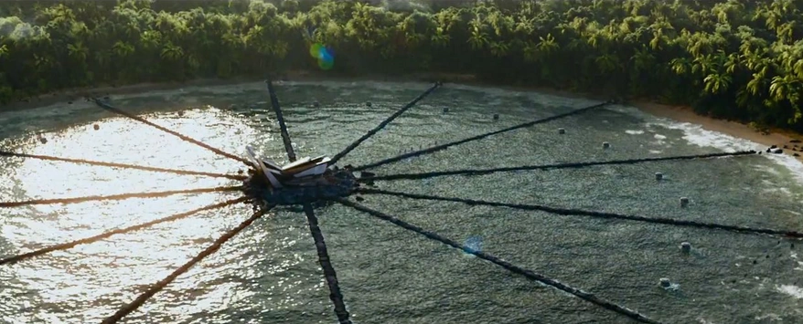
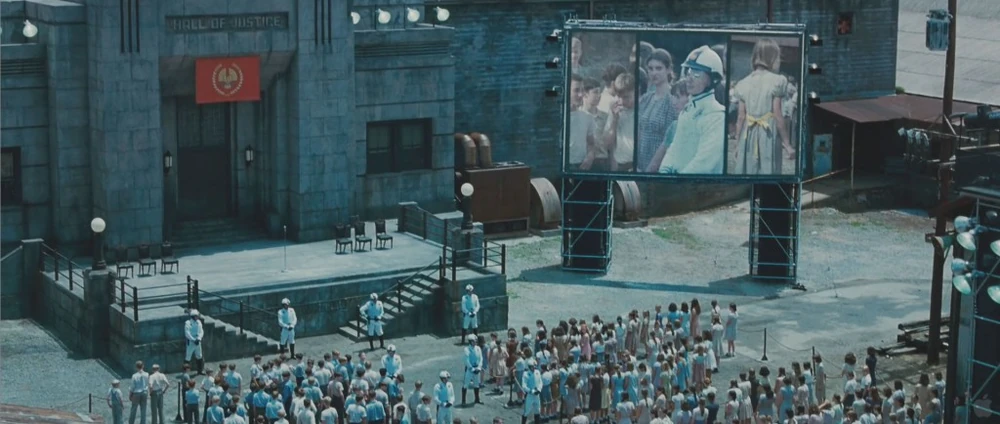

Explicação dos cenários
- Saiba sobre cenários
- Os cenários de Jogos Vorazes eram criados através de uma combinação de filmagens em locações reais nos Estados Unidos, Alemanha e Polônia, e cenários construídos em estúdio. Os cenários reais incluíam florestas isoladas na Carolina do Norte para as arenas, o centro da cidade de Charlotte para a Capital e a antiga siderúrgica alemã Landschaftspark como o Distrito 12. Em estúdio, cenários como o apartamento dos Snows em um formato de floco de neve foram criados para refletir os estilos de design do livro.

